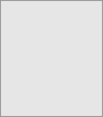

You can create an open conversation that any registered user on this server can discover and join.

You can view all the conversations that you can join by clicking the button next to the search field, then clicking Join open conversations. For the full details, click here.